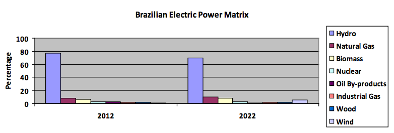

Generation
The 2012-2022 PDE estimates that the electric power generation installed capacity will increase 7.9 GW per year, going from 121 GW in 2012 to 200 GW in 2022. Of this new capacity, 63.4 GW ((81%) will be from renewable resources (wind, hydro and biomass). The remaining 19% will come from natural gas (15%), nuclear (2%) coal (1%) and industrial gas (1%).
This expansion in generation in the next 10 years will require US$ 90 billion in investments.

Transmission
Total investments in transmission from 2011-2020 will reach around US$23 billion, of which US$ 15 billion will be in transmission lines and US$ 8 billion in substations.
The interconnected transmission network currently in operation in Brazil surpasses the 100 thousand km extension. The 2020 PDE calls for an expansion in this network of around 42 thousand km, accounting for a 42% increase. The expansion in the transmission segment will involve 137 projects with tension equal or higher than 230kV and the extension equal or superior of 10 km. Of these projects, 118 are expected to be installed by 2015.
In the next ten years, three electrical grid systems are expected to be connected to the National Grid via the North subsystem: The Manaus system and the Amapá system in July 2013 and the Boa Vista system in February 2015. After this, all Brazilian state capitals will be connected to the National Grid. In addition, this integration will eventually enable the connection of hydropower plants on the left bank of the Amazon River - an important addition to overall power capacity given its hydrological inflow regime is complementary to the rest of the country
Distribution
The Brazilian energy distribution network is composed of high, medium and low tension lines. Even though some transmission companies also have lines with less than 230kv, most of the transmission lines between 69 kV and 138kV are under the responsibility of the electrical energy distribution companies (utilities). These lines are known within the sector as sub-transmission lines. Besides the sub-transmission network, the energy utilities also operate the medium and low voltage lines, called primary and secondary networks, respectively.
The Brazilian energy distribution sector is one of the most regulated in the electric power industry. The private sector is responsible for 67% of the total energy distributed in Brazil, while state-owned companies are responsible for the remaining 33%. According to ABRADEE (Brazilian Electric Power Utility Association), there are 64 electric power utilities in Brazil, with 74.1 million consumer and 2 million new connections every year. This sector has annual revenues of US$26 billion, which represents 2.2% of the national GDP, and annual investments around US$7 billion in new equipment, training, expansion of the system and others.
Several local power utilities have just completed their R&D projects in smart grids and are now ready to begin studying and implementing full-scale smart grid projects. Several technical questions are being raised and they are interested in learning from the U.S. experience, as well as consider U.S. suppliers.
With the Normative Resolution 582 that allows for micro-generation, smart grids may also signify a revolution in the consumers' role. In addition to choosing differentiated rates, the consumer may be able to generate his or her own energy at home and obtain credit from the system. In addition to making the use of energy more rational - which will increase productivity - and requiring less investment in new plants, it can also transform the user into a micro energy generator. This will reduce losses in the interconnected system, increase energy effectiveness, modify relations between public utility concessionaires and clients, and allow further progress regarding alternative sources, such as solar and wind power, in the matrix.
The major challenges faced by Brazil in the electrical energy distribution segment include the management and reduction of non-technical losses in several regions of the country as well as the question of reliability and interconnection.